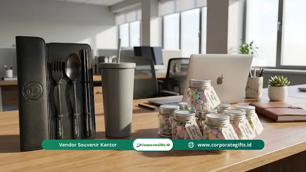

Corporate Gifts ID - Hampers Lebaran kantor adalah bingkisan resmi yang diberikan perusahaan kepada karyawan, klien, atau mitra bisnis menjelang Hari Raya Idul Fitri, umumnya berupa makanan premium atau perlengkapan gaya hidup dalam kemasan eksklusif. Lebih dari sekadar tradisi berbagi tahunan, hampers berfungsi sebagai instrumen strategis untuk mempererat relasi profesional, menjaga loyalitas karyawan, dan memperkuat citra merek secara personal.
Gema takbir dan suasana Lebaran kian dekat, membawa nuansa berbeda di lingkungan kerja. Di tengah padatnya jadwal mengejar target akhir kuartal, ada satu misi krusial yang kerap membuat pusing divisi HR maupun pemilik usaha: pengadaan hampers lebaran Idul Fitri yang tepat guna dan berkesan.
Mungkin terlihat sepele, namun absennya tanda mata di momen spesial ini bisa berdampak serius pada semangat kerja tim. Dalam kultur masyarakat Indonesia yang kental dengan nilai kekeluargaan, hampers adalah representasi kehadiran dan perhatian manajemen. Jangan biarkan kesempatan tahunan ini berlalu begitu saja dan justru menjadi celah yang merusak reputasi perusahaan. Simak strategi lengkap berikut agar anggaran yang Anda keluarkan memberikan dampak maksimal.
Poin Kunci Pengadaan Hampers Lebaran Kantor:
- Investasi Emosional: Hampers Lebaran meningkatkan keterikatan kerja (employee engagement) dan merawat relasi kemitraan B2B.
- Segmentasi Anggaran: Mengatur alokasi dana secara bertingkat (tiering) antara level direksi, manajerial, staf, dan klien VIP.
- Kombinasi F&B dan Non-F&B: Memadukan kue kering artisan dengan barang tahan lama seperti tumbler SUS 304 atau sajadah travel.
- Waktu Pemesanan Ideal: Memulai proses pemesanan pada H-30 hingga H-45 guna mengamankan slot produksi dan harga early bird.
- Packaging & Sentuhan Personal: Kemasan hardbox rigid rapi dengan kartu ucapan bertanda tangan pimpinan melipatgandakan perceived value.
Mengapa Hampers Lebaran Kantor Sangat Vital?
Masih banyak perusahaan yang memandang hampers hanya sebagai beban biaya operasional tahunan. Padahal, ini adalah investasi emosional yang nyata. Dalam dunia bisnis, dampak psikologis dari sebuah bingkisan fisik saat hari raya sering kali lebih berkesan dibandingkan bonus tunai bernominal kecil.
- Mendongkrak Keterikatan Karyawan (Employee Engagement): Tim yang merasa diapresiasi cenderung memiliki dedikasi lebih tinggi dan performa yang lebih konsisten setelah libur panjang usai.
- Mengokohkan Citra Brand: Hampers dengan estetika menarik sering kali dipamerkan penerima di media sosial. Ini menjadi konten promosi gratis (User-Generated Content) yang menaikkan wibawa perusahaan.
- Merawat Relasi Klien: Bagi mitra eksternal, kiriman paket hampers eksklusif adalah sinyal kuat bahwa kolaborasi yang terjalin sangat dihargai dan diharapkan terus berlanjut.
- Membangun Kultur Humanis: Menunjukkan bahwa perusahaan tidak melulu soal profit, tetapi juga peduli pada kebahagiaan individu di dalamnya.
Strategi Mengatur Anggaran Agar Tidak Jebol
Tantangan utama dalam pengadaan bingkisan adalah menyeimbangkan kualitas isi dengan stabilitas arus kas perusahaan. Anda tidak harus memaksakan kemewahan jika keuangan sedang ketat. Kuncinya ada pada nilai guna dan visual kemasan.
- Kategorikan Penerima: Buatlah tingkatan (tiering) penerima, misalnya Direksi, Manajer, Staf, Klien VIP, dan Klien Reguler agar alokasi dana lebih proporsional.
- Manfaatkan Diskon Grosir: Lakukan pemesanan jauh hari (pre-order) dalam jumlah banyak untuk mendapatkan penawaran harga terbaik dari vendor resmi B2B.
- Siapkan Dana Cadangan: Cadangkan sekitar 5-10% dari total anggaran untuk keperluan mendadak, seperti tambahan penerima baru atau kenaikan ongkos kirim.
- Prioritaskan Kemasan: Produk sederhana yang dikemas secara eksklusif (hardbox tebal, pita satin, kartu ucapan personal) akan terlihat jauh lebih bernilai dibanding barang mahal yang dibungkus seadanya.
Banyak karyawan menganggap hampers kantor sebagai bentuk validasi bahwa mereka dihargai lebih dari sekadar alat produksi. Perhatian kecil ini dapat meredakan lelah persiapan Lebaran dan menumbuhkan rasa loyalitas yang tulus terhadap perusahaan.

Pilihan hampers Lebaran kantor modern yang memadukan set cutlery elegan, tumbler stainless, dan toples camilan premium.
Opsi Hampers: Makanan dan Minuman (F&B) Premium
Kategori kuliner adalah pilihan paling aman, klasik, dan hampir pasti diterima baik oleh semua kalangan. Tantangannya adalah memilih jenis hidangan yang tidak terasa pasaran atau membosankan.
- Kue Kering Premium: Nastar, kastengel, dan putri salju memang menu wajib, tapi pastikan memilih vendor yang menggunakan mentega (butter) berkualitas tinggi dengan toples kedap udara yang estetik.
- Kopi atau Teh Artisan: Paket biji kopi nusantara (single origin) atau teh bunga (flower tea) memberikan kesan elegan dan mengajak penerima untuk rileks sejenak saat libur hari raya.
- Madu Alami dan Suplemen Imunitas: Kesadaran kesehatan yang tinggi menjadikan hampers berisi madu hutan murni atau sari herbal sangat bernilai guna dan dihargai.
- Cokelat Eksklusif: Praline dengan isian unik atau cokelat lokal premium bisa menjadi alternatif modern yang manis menggantikan kue tradisional.
Opsi Hampers: Perlengkapan Rumah & Gaya Hidup Fungsional
Jika Anda ingin memberikan sesuatu yang awet dan terus diingat karena dipakai sehari-hari, kategori non-makanan (non-food) adalah solusi cerdas. Jenis ini memiliki masa simpan tak terbatas sehingga aman dari risiko kedaluwarsa.
- Set Alat Makan (Cutlery Set): Piring keramik estetik, sendok garpu bernuansa emas, atau mangkuk kayu jati sangat diminati oleh karyawan muda atau mereka yang baru berkeluarga.
- Diffuser & Aromaterapi: Menghadirkan ketenangan di rumah lewat reed diffuser beraroma lembut adalah simbol kepedulian perusahaan terhadap kesehatan mental tim.
- Tumbler Stainless & Office Kit: Botol minum tahan panas (vacuum flask) berbahan SUS 304 dengan ukiran grafir nama penerima memberikan sentuhan personal yang mendalam.
- Sajadah Travel & Sarung: Perlengkapan ibadah yang ringkas dan mudah dibawa bepergian sangat relevan dan bermanfaat di momen Hari Raya Idul Fitri.
Tabel Matriks Komparasi Kategori Hampers Lebaran
Berikut rangkuman perbandingan karakteristik antara hampers berbasis makanan (F&B) dan perlengkapan gaya hidup (Non-F&B):
| Parameter Evaluasi | Kategori Makanan & Minuman (F&B) | Kategori Gaya Hidup (Non-F&B) |
|---|---|---|
| Masa Simpan (Shelf Life) | Terbatas (1-3 bulan, rentan rusak jika terpapar panas) | Tanpa batas kedaluwarsa, sangat aman untuk stok |
| Penerimaan Audiens | Universal, dinikmati bersama seluruh anggota keluarga | Personal, digunakan untuk kebutuhan harian individu |
| Retensi Branding | Jangka pendek (sepanjang masa libur Lebaran) | Jangka panjang (bertahun-tahun selama produk terpakai) |
| Risiko Logistik Antarkota | Tinggi (kue rentan remuk tanpa packaging die-cut busa) | Rendah (material logam, keramik tebal, atau tekstil kuat) |
| Rekomendasi Target | Staf umum, keluarga karyawan, mitra operasional | Klien VIP, jajaran direksi, manajer senior |
Tips Memilih Vendor Hampers Terpercaya
Memilih mitra penyedia hampers adalah langkah krusial. Kualitas kerja mereka mempertaruhkan nama baik perusahaan Anda. Jangan mudah terbuai foto katalog yang indah di media sosial, lakukan verifikasi ketat melalui kriteria berikut:
- Cek Portofolio & Legalitas: Perhatikan klien korporat mana saja yang pernah mereka layani dan pastikan vendor berbadan hukum resmi dengan fasilitas faktur pajak standar B2B.
- Wajib Minta Sampel Fisik: Untuk pesanan massal, meminta sampel fisik adalah keharusan guna memastikan rasa makanan, kehalalan, serta presisi material produk.
- Kapasitas Produksi Pabrikan: Pastikan vendor memiliki kapasitas produksi yang memadai untuk menyelesaikan pesanan sesuai timeline tanpa mengorbankan standar QC.
- Fleksibilitas Logistik Multi-Alamat: Pilih layanan pengadaan hampers korporat yang sanggup menangani pengiriman ke berbagai titik alamat kantor cabang maupun rumah karyawan.
Etika Pengiriman dan Kartu Ucapan Personal
Isi bingkisan memang penting, tapi cara penyajiannya adalah penyempurna dari pemberian tersebut. Barang mahal bisa terasa hampa tanpa pesan tulus, sebaliknya barang sederhana bisa sangat menyentuh dengan kata-kata yang tepat.
- Waktu Pengiriman Ideal: Kirimkan hampers maksimal H-10 hingga H-7 Lebaran agar penerima bisa menikmatinya tepat waktu sebelum jadwal cuti bersama atau arus mudik.
- Personalisasi Nama Penerima: Hindari sapaan kaku seperti "Kepada Yth. Karyawan"; cantumkan nama lengkap mereka di kartu ucapan untuk kesan yang lebih hangat dan eksklusif.
- Pesan yang Bermakna: Jangan hanya menulis "Selamat Idul Fitri", sisipkan kalimat terima kasih atas dedikasi dan kerja keras mereka selama setahun ini.
- Verifikasi Alamat Terkini: Pastikan data alamat karyawan atau klien sudah diperbarui guna menghindari paket retur akibat perpindahan domisili.
Kesalahan Umum yang Harus Dihindari
Meski berniat baik, sering kali terjadi kesalahan kecil yang justru merusak makna pemberian. Hindari hal-hal berikut agar investasi hampers Anda memberikan Return on Investment (ROI) emosional yang optimal:
- Memberikan Barang "Sisa Gudang": Pantang menjadikan sisa merchandise promosi lama yang tidak terpakai sebagai isi utama hampers Lebaran.
- Abai pada Preferensi Klien: Untuk klien VIP, lakukan riset kecil. Hindari mengirimkan makanan manis jika klien tersebut memiliki pantangan gula atau riwayat kesehatan tertentu.
- Pengemasan Rapuh: Pastikan kemasan luar memiliki perlindungan ekstra (bubble wrap tebal atau master carton) agar kue tidak hancur saat transit pengiriman ekspedisi.
- Logo Perusahaan Terlalu Dominan: Walau tujuannya branding, hindari menempel logo berukuran raksasa di setiap item. Buatlah penempatan logo yang elegan, minimalis, dan samar (subtle).
Kesimpulan dan Konsultasi Pengadaan
Pada akhirnya, hampers Lebaran kantor bukanlah ajang kompetisi siapa yang memberi barang termahal. Ini adalah tentang bagaimana perusahaan Anda hadir secara tulus di tengah momen kebahagiaan keluarga karyawan dan mitra bisnis. Sebuah paket yang dipilih dengan pertimbangan matang akan jauh lebih membekas daripada barang mewah yang disiapkan asal-asalan.
Konsultasikan kebutuhan hampers Hari Raya instansi Anda bersama tim spesialis CorporateGifts.ID. Dapatkan kurasi katalog resmi 2026, sampel mockup digital gratis, dan penawaran harga B2B terbaik melalui formulir permintaan penawaran harga resmi hari ini juga.